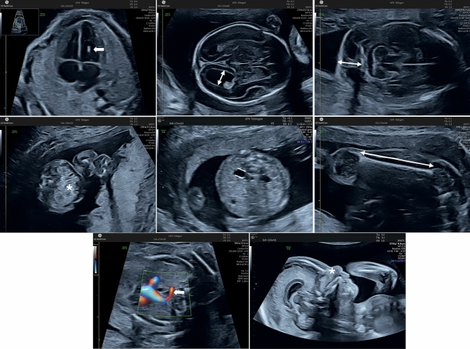
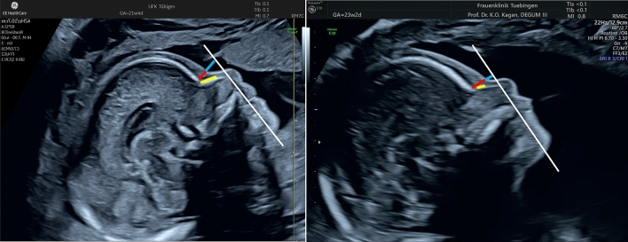
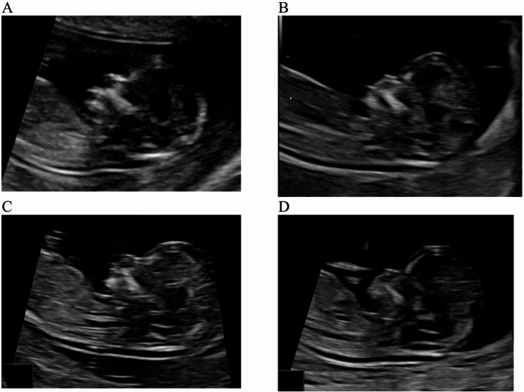

567 — Sàng lọc lệch bội: NIPT vs xét nghiệm phối hợp quý I & dấu hiệu mềm quý II
Tags: pattern:lech-boi vung:thai-nhi score:LR-dau-hieu-mem protocol:NIPT protocol:SA-hinh-thai
Mức chắc chắn (certainty): tổng hợp y văn (literature synthesis) — bảng likelihood ratio lấy từ tổng quan Kagan 2025 (Arch Gynecol Obstet), số liệu NT lấy từ phân tích gộp Carta 2026; không phải ca nguyên văn.
1. Tổng quan bệnh học – cơ chế hình ảnh
1.1. Ba tầng sàng lọc, một nguyên tắc
- Sàng lọc (screening) chỉ trả lời "nguy cơ cao hay thấp"; chẩn đoán (diagnostic) mới khẳng định — chỉ có CVS (sinh thiết gai nhau) hoặc chọc ối (amniocentesis) kèm nhiễm sắc thể đồ/CMA.
- Ba tầng: xét nghiệm phối hợp quý I (combined first-trimester screening, cFTS), cfDNA/NIPT, và siêu âm dấu hiệu mềm quý II (second-trimester soft markers).
- Nguyên tắc: không có xét nghiệm nào thay thế được siêu âm hình thái. NIPT âm tính không loại trừ dị tật cấu trúc, bất thường gen đơn, hay bất thường vi mất đoạn/vi lặp đoạn (copy-number variant, CNV) — những thứ NIPT thường không phát hiện.
1.2. TẠI SAO NIPT hoạt động: sinh học của cfDNA
- Trong thai kỳ, tế bào nuôi (trophoblast) chết theo chương trình và giải phóng DNA tự do (cell-free DNA, cfDNA) vào máu mẹ. Phần DNA có nguồn gốc thai gọi là phân đoạn thai (fetal fraction).
- Phân đoạn thai thường ≥ 4% mới đủ tin cậy; < 4% gây no-call (không có kết quả) — hay gặp ở mẹ béo phì, thai nhỏ, lấy máu quá sớm.
- cfDNA có thời gian bán hủy rất ngắn (vài phút), nên sau sinh hoặc sau thai lưu sẽ biến mất nhanh — nhưng thai biến mất (vanishing twin) có thể để lại tín hiệu gây dương tính giả.
- Vì cfDNA chủ yếu đến từ bánh nhau, hiện tượng khảm bánh nhau (confined placental mosaicism) có thể gây bất đồng giữa NIPT và thai nhi.
1.3. TẠI SAO các dấu hiệu mềm xuất hiện
- NT dày (increased nuchal translucency): tích tụ dịch dưới da vùng gáy do suy tim sớm/loạn sản mạch bạch huyết — gặp trong lệch bội, dị tật tim, loạn sản xương, hội chứng gen (Noonan), nhiễm trùng, hoặc thai bình thường.
- Mất xương mũi (absent/hypoplastic nasal bone): quá trình cốt hóa xương mũi chậm ở thai T21 (liên quan con đường tín hiệu xương); đây là lý do xương mũi chỉ là dấu hiệu mềm, không phải chẩn đoán.
- Nếp gáy dày (thickened nuchal fold): phù dưới da vùng chẩm-gáy ở quý II; ngưỡng ≥ 6 mm.
- Ruột tăng hồi âm (echogenic bowel): hồi âm ruột ≥ xương lân cận; gặp trong T21, xơ nang (CF), nhiễm trùng bào thai, chảy máu trong ối, chậm tăng trưởng.
- Giãn bể thận nhẹ (mild pyelectasis): ứ nước nhẹ, không đặc hiệu cho lệch bội; ngưỡng quý II 4–7 mm.
- Động mạch dưới đòn phải lạc chỗ (aberrant right subclavian artery, ARSA): mạch máu xuất phát cuối cung ĐMC và đi sau thực quản; thấy rõ trên mặt cắt 3 mạch máu–khí quản (3VT) có Doppler màu.
1.4. Ngưỡng định lượng phải nhớ
- cFTS: làm ở 11+0–13+6 tuần, CRL 45–84 mm; gồm tuổi mẹ + NT + free β-hCG + PAPP-A. Phát hiện T21 khoảng 85–90% ở tỷ lệ dương tính giả 5% (NICE/ACOG).
- NIPT: làm từ 10 tuần; phát hiện T21 khoảng 98–99%, dương tính giả < 0,1% (Kagan 2025: DR ~98%, FPR < 0,1%; các phân tích gộp lớn hơn báo cáo T21 ~99,7%).
- Quadruple test quý II: AFP, hCG, uE3, inhibin A; phát hiện khoảng 80% ở FPR 5%.
- NT: ≥ 3,5 mm là ngưỡng mời chẩn đoán xâm lấn (CVS/chọc ối + CMA) và siêu âm tim thai 18–22 tuần dù NIPT âm tính.
- NT 3,0–3,4 mm: vẫn có 13,1% bất thường nhiễm sắc thể, 2,5% CNV gây bệnh, 5,7% bệnh gen đơn (Carta 2026, 17 nghiên cứu, 7.007 thai) — không được xem là "bình thường".
- Một dấu hiệu mềm có mặt ở 69,1% thai T21 và 11,9% thai euploid (Agathokleous).
- Ngưỡng nguy cơ cao: 1:100; nếu không có dấu hiệu mềm nào, nguy cơ giảm khoảng 10 lần (tích các âm LR ≈ 0,096).
2. Mẫu hình + chẩn đoán phân biệt theo vị trí (gamut)
2.1. Mẫu hình theo tầng sàng lọc
- Quý I (11+0–13+6): NT dày, mất/ngắn xương mũi, ống tĩnh mạch đảo sóng a, hồi lưu van ba lá — gợi ý T21/T18/T13, Turner, Noonan.
- Quý II (18–22 tuần): nếp gáy ≥ 6 mm, giãn não thất ≥ 10 mm, mất xương mũi, ARSA, ruột tăng hồi âm, giãn bể thận, xương đùi/xương cánh tay ngắn, ổ tăng hồi âm trong tim.
- NIPT: không thấy hình ảnh — chỉ trả kết quả nguy cơ; luôn đặt trong bối cảnh siêu âm.
2.2. Gamut "NT dày"
- Lệch bội — T21, T18, T13, Turner (45,X), tam bội.
- Dị tật tim bẩm sinh — hẹp eo ĐMC, hẹp van ĐMC, tứ chứng Fallot.
- Loạn sản xương — loạn sản sụn, loạn sản xương gây chết.
- Hội chứng gen — Noonan, Smith-Lemli-Opitz, các bệnh gen đơn.
- Nhiễm trùng bào thai — parvovirus B19, CMV.
- Song thai — NT có thể cao sinh lý ở một thai.
- Biến thể bình thường — NT 3,0–3,4 mm ở thai euploid vẫn có thể bình thường nhưng cần theo dõi.
2.3. Gamut "dấu hiệu mềm quý II"
- Đầu–mặt: nếp gáy dày, mất/ngắn xương mũi, đầu dẹt (brachycephaly), tăng độ dày trước mũi (pre nasal thickness).
- Não: giãn não thất nhẹ ≥ 10 mm, giảm sản thể chai.
- Tim: ổ tăng hồi âm trong thất, tràn dịch màng tim, hở van.
- Bụng: ruột tăng hồi âm, giãn bể thận, nang rốn.
- Xương: đùi/cánh tay ngắn, ngón út cong (clinodactyly), khe hở giữa ngón 1–2 (sandal gap).
- Mạch: ARSA, giãn tĩnh mạch rốn.
2.4. Gamut "dấu hiệu mềm + bất thường cấu trúc"
- Nhiễm sắc thể: T21, T18, T13, Turner, tam bội.
- CNV gây bệnh (pCNV): vi mất đoạn/vi lặp đoạn — NIPT thường bỏ sót, cần CMA.
- Bệnh gen đơn: Noonan, xơ nang, loạn sản xương.
- Nhiễm trùng: CMV, parvovirus B19, toxoplasma.
- Nguyên nhân ngoài di truyền: chảy máu trong ối, nhau bám bất thường, chậm tăng trưởng.
3. Bảng so sánh phân biệt (ma trận đối chiếu)
3.1. So sánh các chiến lược sàng lọc
| Chiến lược | Thời điểm / cách làm | Chốt vào (rule-in) | Chốt loại (rule-out) | Gợi ý xác nhận |
|---|---|---|---|---|
| cFTS | 11+0–13+6 tuần; NT + free β-hCG + PAPP-A + tuổi mẹ | Nguy cơ ≥ 1:100 → mời NIPT/chẩn đoán | Nguy cơ thấp < 1:1000 và siêu âm bình thường | NIPT hoặc CVS/chọc ối nếu nguy cơ cao |
| NIPT (cfDNA) | Từ 10 tuần, sau siêu âm quý I bình thường | Nguy cơ cao với T21/T18/T13 | Kết quả thấp không loại trừ CNV, bệnh gen đơn, dị tật cấu trúc | Chẩn đoán xâm lấn khi dương tính; theo dõi nếu âm tính |
| Quadruple test | 15–20 tuần; AFP, hCG, uE3, inhibin A | Nguy cơ ≥ 1:100 | Nguy cơ thấp | NIPT/CMA nếu nguy cơ cao |
| Siêu âm dấu hiệu mềm | 18–22 tuần (nếp gáy 15–22 tuần) | ≥ 1 dấu hiệu có LR dương đáng kể (nếp gáy, giãn não thất, ARSA, mất xương mũi) | Không có dấu hiệu nào → giảm nguy cơ ~10 lần | Tính LR; NIPT/CMA nếu nguy cơ sau test ≥ 1:100 |
| Chẩn đoán xâm lấn | CVS 11–14 tuần; chọc ối ≥ 15 tuần | Karyotype/CMA khẳng định | Karyotype/CMA bình thường loại trừ lệch bội lớn | CMA khi có dị tật cấu trúc/NT ≥ 3,5 mm |
3.2. Ma trận dấu hiệu mềm quý II (theo Agathokleous, qua Kagan 2025)
| Dấu hiệu (marker) | Ngưỡng / cách đo | T21 (%) | Euploid (%) | LR dương | Chốt vào (rule-in) | Chốt loại (rule-out) |
|---|---|---|---|---|---|---|
| Ổ tăng hồi âm trong tim (ICEF) | Hồi âm ≥ xương, thường thất trái | 24,4 | 3,9 | 5,83 | LR đơn độc 0,94 → gần như không đổi nguy cơ | Không có ICEF không loại trừ T21 |
| Giãn não thất (ventriculomegaly) | ≥ 10 mm (đo sừng sau) | 7,5 | 0,2 | 27,52 | LR đơn độc 3,81 + cần MRI/CMA | Não thất bình thường giảm nhẹ nguy cơ |
| Nếp gáy dày (thickened nuchal fold) | ≥ 6 mm, mặt cắt ngang có CSP, đồi thị, tiểu não | 26,0 | 1,0 | 23,30 | LR đơn độc 3,79 | Nếp gáy < 6 mm loại trừ marker này |
| Ruột tăng hồi âm (echogenic bowel) | Hồi âm ≥ xương, giảm gain | 16,7 | 1,1 | 11,44 | LR đơn độc 1,65 — kèm CF/nhiễm trùng/chảy máu | Ruột hồi âm bình thường |
| Giãn bể thận nhẹ (pyelectasis) | 4–7 mm quý II | 13,9 | 1,7 | 7,63 | LR đơn độc 1,08 — không đủ mạnh một mình | Bể thận < 4 mm |
| Xương cánh tay ngắn (short humerus) | ≤ 0,89–0,92 MoM | 30,3 | 4,6 | 4,81 | LR đơn độc 0,78 | Chiều dài bình thường |
| Xương đùi ngắn (short femur) | ≤ 0,88–0,93 MoM hoặc < BP5 | 27,7 | 6,4 | 3,72 | LR đơn độc 0,61 | Chiều dài bình thường |
| ARSA | Mặt cắt 3VT + Doppler màu, nhánh cuối cung ĐMC | 30,7 | 1,5 | 21,48 | LR đơn độc 3,94 | Không thấy ARSA trên 3VT |
| Mất/giảm sản xương mũi | Mặt cắt giữa dọc; ngưỡng 2,5 mm quý II | 59,8 | 2,8 | 23,27 | LR đơn độc 6,58 — mạnh nhất trong nhóm | Xương mũi bình thường |
- Đọc đúng: LR dương 1,5–5 = tăng nguy cơ nhẹ; 5–10 = trung bình; ≥ 10 = mạnh. Nhưng LR đơn độc (khi các marker khác đều âm) mới là con số dùng để quyết định — và chỉ giãn não thất, nếp gáy, ARSA, mất xương mũi làm thay đổi nguy cơ đáng kể.
- Nếu không có marker nào: nhân các âm LR (0,80 × 0,94 × 0,80 × 0,90 × 0,92 × 0,74 × 0,80 × 0,71 × 0,46 ≈ 0,096) → nguy cơ còn khoảng 1/10 nguy cơ trước test.
3.3. Ảnh minh họa

*Các dấu hiệu mềm: hàng trên — ổ tăng hồi âm thất trái (mũi tên), giãn não thất nhẹ (mũi tên đôi), nếp gáy dày (mũi tên đôi); hàng giữa — ruột tăng hồi âm (dấu *), giãn bể thận nhẹ (hai đường), xương đùi/cánh tay ngắn (mũi tên đôi); hàng dưới — ARSA (mũi tên), mất xương mũi (dấu ). Nguồn: Kagan KO, Hoopmann M, Sonek J, Arch Gynecol Obstet 2025 (PMC12033118), CC BY-NC-ND 4.0 — nguyên bản, không cắt/ghép.
Đo độ dày trước mũi (PT, đường đỏ) và chiều dài xương mũi (NBL, đường vàng); thai T21 có PT tăng, NBL ngắn, tỷ lệ PT/NBL tăng. Nguồn: Kagan KO et al., PMC12033118, CC BY-NC-ND 4.0 — nguyên bản.4. Protocol chụp + hệ phân độ/điểm chuẩn hóa
4.1. Protocol siêu âm quý I (11+0–13+6 tuần, CRL 45–84 mm)
- Mặt cắt giữa dọc (mid-sagittal): đo NT ở điểm rộng nhất, caliper đặt mép trong–mép trong, cổ trung gian, đầu trung lập; tách màng ối khỏi da gáy.
- Xương mũi: mặt cắt giữa dọc, góc ~45°, phóng to đủ; ghi có/không có, chiều dài nếu đo.
- Ống tĩnh mạch (ductus venosus): sóng a đảo/mất là bất thường.
- Hồi lưu van ba lá: TR ≥ 60 cm/s là bất thường.
- Hình thái sớm: sọ, mặt, cột sống, tim, thành bụng, chi, bánh nhau, ối.
4.2. Protocol quý II (18–22 tuần)
- Nếp gáy: mặt cắt ngang đầu qua CSP, đồi thị, tiểu não; đo từ xương chẩm đến da, ngưỡng ≥ 6 mm.
- Não thất bên: đo sừng sau (atrium); ≥ 10 mm = giãn.
- Bể thận: mặt cắt ngang qua thận; 4–7 mm quý II.
- Ruột: đánh giá khi giảm gain; so với xương.
- Tim: 4 buồng, đường ra, 3VT tìm ARSA.
- Xương: đo đùi, cánh tay, so với tuổi thai (MoM).
4.3. Tính nguy cơ và ngưỡng xử trí
- Nguy cơ sau test = nguy cơ trước test × LR của từng marker (dương nếu có, âm nếu không có).
- Ngưỡng 1:100 thường dùng để định nghĩa nguy cơ cao và mời chẩn đoán.
- Ví dụ: thai 20 tuần, nguy cơ trước test 1:1000, chỉ có ICEF (LR 5,83) nhưng các marker khác âm → tích LR ≈ 0,95 → nguy cơ gần như không đổi (1:1000). Ngược lại, chỉ có nếp gáy dày (LR đơn độc 3,79) → nguy cơ tăng lên khoảng 1:264; nếu kèm ARSA hoặc mất xương mũi, nguy cơ tăng mạnh hơn.
flowchart TD
A[Thai 11+0–13+6, CRL 45–84 mm] --> B[Đo NT, xương mũi, DV, TR + hình thái sớm]
B --> C{Nguy cơ tổng hợp ≥ 1:100?}
C -->|Không| D[Siêu âm hình thái 18–22 tuần]
C -->|Có| E[Tư vấn NIPT]
E -->|Nguy cơ thấp| D
E -->|Nguy cơ cao| F[CVS 11–14 tuần hoặc chọc ối ≥ 15 tuần + CMA]
B --> G{NT ≥ 3,5 mm?}
G -->|Có| F
G -->|Không| C
F --> H[Siêu âm tim thai 18–22 tuần + theo dõi]
D --> I{Có dấu hiệu mềm quý II?}
I -->|Có| J[Tính LR; nguy cơ ≥ 1:100 → NIPT/CMA]
I -->|Không| K[Giảm nguy cơ ~10 lần]
4.4. Khi nào chọn NIPT, khi nào đi thẳng chẩn đoán?
- NIPT trước: thai bình thường trên siêu âm, không có chỉ định chẩn đoán ngay; ở song thai, NIPT là sàng lọc chính xác nhất cho T21 và được ưu tiên sau siêu âm quý I bình thường (VVOG 2025).
- Đi thẳng CVS/chọc ối + CMA: NT ≥ 3,5 mm, dị tật cấu trúc, tiền sử con bất thường nhiễm sắc thể, bố/mẹ mang chuyển đoạn, hoặc NIPT dương tính.
- CMA thay karyotype khi có dị tật cấu trúc hoặc NT dày, vì CMA phát hiện thêm CNV mà karyotype bỏ sót.
- Không dùng NIPT để tầm soát vi mất đoạn/vi lặp đoạn thường quy — độ chính xác thấp, nhiều dương tính giả.
5. Biến thể bình thường và cạm bẫy
- ICEF đơn độc: LR đơn độc 0,94 — không chỉ định chọc ối, không siêu âm tim thai, không theo dõi thêm. Đây là biến thể bình thường, đặc biệt ở thai Á (tới 30%).
- Giãn bể thận nhẹ đơn độc: LR 1,08 — không đổi xử trí về lệch bội, nhưng vẫn cần siêu âm lại quý III vì nguy cơ bệnh thận sau sinh (11,9% với mức nhẹ).
- Xương đùi/cánh tay ngắn đơn độc: LR 0,61/0,78 — thường do thể tạng/di truyền, không phải lệch bội; nhưng nếu ngắn < BP5 kèm chậm tăng trưởng, nghĩ loạn sản xương.
- Mất xương mũi: có thể gặp ở 1–3% thai euploid, khác biệt theo dân tộc; đo sai mặt cắt (không giữa dọc, đầu ngửa/ gập) là nguyên nhân dương tính giả hàng đầu.
- NT dày: đo sai vị trí (caliper ngoài–ngoài), để màng ối dính vào da, đầu không trung gian, CRL ngoài 45–84 mm → sai số lớn.
- Nếp gáy quý II ≠ NT quý I: hai ngưỡng khác nhau (6 mm vs 3,5 mm), hai thời điểm khác nhau; không dùng lẫn.
- NIPT âm tính không loại trừ: CNV, bệnh gen đơn, dị tật cấu trúc, lệch bội thai ở song thai (phân đoạn thai thấp hơn), khảm bánh nhau.
- NIPT dương tính giả: thai biến mất, truyền máu mẹ–thai, ung thư mẹ, khảm bánh nhau; luôn xác nhận bằng chẩn đoán xâm lấn.
- No-call: phân đoạn thai < 4%; hẹn lấy lại sau 1–2 tuần, không kết luận nguy cơ thấp.
- Sau NIPT bình thường vẫn phải làm siêu âm hình thái — đây là điểm hay bị bỏ qua trong tư vấn.
- Song thai: NIPT có thể không phân biệt được thai nào bị ảnh hưởng; kết quả dương tính cần chẩn đoán xâm lấn và xác định thai.
6. Tự lượng giá — Blind Quiz
Ca 1 — Thai 20 tuần, siêu âm hình thái có nhiều dấu hiệu:
- Gợi ý: ảnh là bảng tổng hợp, không phải một thai.
- Hỏi: Kể tên 4 dấu hiệu mềm trong ảnh. Dấu hiệu nào đơn độc làm tăng nguy cơ T21 đáng kể, dấu hiệu nào không?
Bấm để hiện đáp án (findings + chẩn đoán)
- Các dấu hiệu: ổ tăng hồi âm trong thất trái; giãn não thất nhẹ; nếp gáy dày; ruột tăng hồi âm; giãn bể thận nhẹ; xương đùi/cánh tay ngắn; ARSA; mất xương mũi.
- Làm tăng nguy cơ khi đơn độc: giãn não thất (LR 3,81), nếp gáy dày (3,79), ARSA (3,94), mất xương mũi (6,58).
- Không đổi nguy cơ khi đơn độc: ICEF (0,94), giãn bể thận (1,08), xương đùi ngắn (0,61), xương cánh tay ngắn (0,78); ruột tăng hồi âm chỉ 1,65.
- Vì sao: khi các marker khác đều âm, tích các âm LR gần 1,0 sẽ "hủy" LR dương của marker yếu.
- Nguồn ảnh: Kagan KO et al., Arch Gynecol Obstet 2025 (PMC12033118), CC BY-NC-ND 4.0.
Ca 2 — Thai 12 tuần 5 ngày, đánh giá xương mũi:

Bốn mức hồi âm xương mũi: A > da, B = da, C < da, D không thấy. Nguồn: Song WL et al., BMC Pregnancy Childbirth 2025 (PMC12777233), CC BY-NC-ND 4.0 — nguyên bản.- Hỏi: Hình nào là mất xương mũi? Có phải chẩn đoán T21 không? Bước tiếp theo?
Bấm để hiện đáp án (findings + chẩn đoán)
- Findings: D — không thấy hồi âm xương mũi; A là bình thường (hồi âm xương mũi cao hơn da), B/C là trung gian.
- Chẩn đoán: mất xương mũi — dấu hiệu mềm, không phải chẩn đoán T21.
- Bước tiếp theo: tính nguy cơ tổng hợp (kết hợp NT, tuổi mẹ, sinh hóa); nếu nguy cơ ≥ 1:100 → NIPT hoặc CVS/chọc ối + CMA. Nếu NIPT đã âm tính trước đó, mất xương mũi đơn độc vẫn có thể xem xét CMA sau tư vấn.
- Nguồn ảnh: Song WL et al., BMC Pregnancy Childbirth 2025 (PMC12777233), CC BY-NC-ND 4.0.
Ca 3 — Hai thai 22 tuần, so sánh mặt nghiêng:
- Hỏi: Bên nào là T21? Dấu hiệu nào giúp phân biệt? Tỷ lệ nào có giá trị nhất?
Bấm để hiện đáp án (findings + chẩn đoán)
- Findings: bên phải là T21: độ dày trước mũi (PT) tăng, xương mũi ngắn, tỷ lệ PT/NBL tăng, khoảng trước trán (prefrontal space) hẹp.
- Dấu hiệu: đường đỏ = PT, đường vàng = NBL; tỷ lệ PT/NBL có độ phát hiện cao nhất (
86,2% ở FPR 5%, theo Vos), so với NBL đơn thuần (61,9%) và PT (~63,4%). - Lưu ý: đây là dấu hiệu hỗ trợ, không thay thế xét nghiệm di truyền.
- Nguồn ảnh: Kagan KO et al., PMC12033118, CC BY-NC-ND 4.0.
Ca 4 — Thai 12 tuần 3 ngày, NT 3,2 mm, NIPT âm tính. Mẹ hỏi "vậy là an toàn chưa?"
Bấm để hiện đáp án (findings + chẩn đoán)
- Findings: NT 3,0–3,4 mm nằm trong vùng không bình thường dù dưới ngưỡng 3,5 mm.
- Chẩn đoán: cần tư vấn nguy cơ 13,1% bất thường nhiễm sắc thể, 2,5% CNV gây bệnh, 5,7% bệnh gen đơn trong nhóm NT 3,0–3,4 mm (Carta 2026); NIPT âm tính không loại trừ các bất thường này.
- Xử trí: siêu âm hình thái sớm + siêu âm tim thai 18–22 tuần; tư vấn CMA (CVS 11–14 tuần hoặc chọc ối ≥ 15 tuần); theo dõi tăng trưởng.
- Vì sao: NIPT chủ yếu phát hiện lệch bội toàn thể; CNV và bệnh gen đơn cần CMA/panel gen.
Bài liên quan chéo
- 500 – Tổng quan Hệ Vú & Sản Phụ khoa
- 550 – Thai sớm, sẩy thai & thai ngoài tử cung
- 565 – Sàng lọc hình thái thai & Doppler sản khoa
- 566 – Song thai: chorionicity, TTTS & TAPS
Không dùng để chẩn đoán độc lập khi chưa có người hướng dẫn.